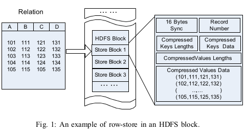
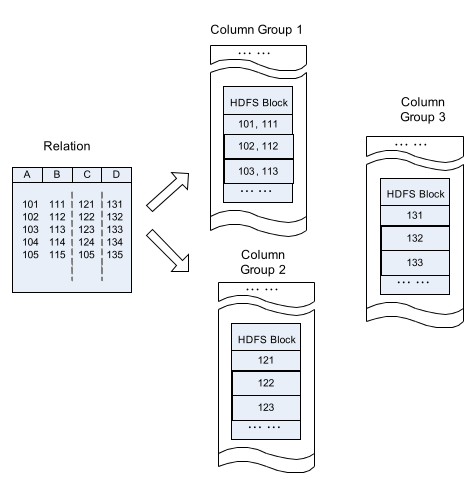
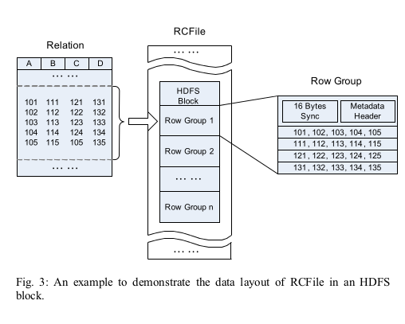
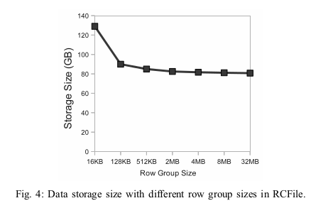

rcfile
Table of Contents
1 rcfile
http://web.cse.ohio-state.edu/hpcs/WWW/HTML/publications/papers/TR-11-4.pdf
Based on our analysis on Facebook systems and huge user data sets, we have summarized the following four critical requirements for a data placement structure in a MapReduce environment.(数据存储格式必须满足下面几个要求)
- 1) Fast data loading. Loading data quickly is critical for the Facebook production data warehouse. On average, more than 20TB data are pushed into a Facebook data warehouse every day. Thus, it is highly desirable to reduce data loading time, since network and disk traffic during data loading will interfere with normal query executions.
- 2) Fast query processing. Many queries are response-time critical in order to satisfy the requirements of both real-time Website requests and heavy workloads of decision supporting queries submitted by highly-concurrent users. This requires that the underlying data placement struc-ture retain the high speed for query processing as the amount of queries rapidly increases.
- 3) Highly efficient storage space utilization. Rapidly grow-ing user activities have constantly demanded scalable storage capacity and computing power. Limited disk space demands that data storage be well-managed, in practice, to address the issues on how to place data in disks so that space utilization is maximized.
- 4) Strong adaptivity to highly dynamic workload patterns. Data sets are analyzed by different application users for different purposes in many different ways. Some data analytics are routine processes that are executed periodically in a static mode, while some are ad-hoc queries issued from internal platforms. Most workloads do not follow any regular patterns, which demand the underlying system be highly adaptive to unexpected dynamics in data processing with limited storage space, instead of being specific to certain workload patterns.(能够比较平衡地服务于各种workload)
Horizontal Row-store (水平基于行存储) pros(1,4) cons(2,3)

Vertical Column-store (垂直基于列存储) 如果确定访问模式的话那么可以通过column redundancy来提升访问速度

RCFile (Record Columnar File). It combines the advantages of both row-store and column-store. First, as row-store, RCFile guarantees that data in the same row are located in the same node, thus it has low cost of tuple reconstruction. Second, as column-store, RCFile can exploit a column-wise data compression and skip unnecessary column reads.
RCFile is designed and implemented on top of the Hadoop Distributed File System (HDFS). As demonstrated in the example shown in Figure 3, RCFile has the following data layout to store a table:
- 1) According to the HDFS structure, a table can have multiple HDFS blocks.
- 2) In each HDFS block, RCFile organizes records with the basic unit of a row group. That is to say, all the records stored in an HDFS block are partitioned into row groups. For a table, all row groups have the same size. Depending on the row group size and the HDFS block size, an HDFS block can have only one or multiple row groups.
- 3) A row group contains three sections.
- The first section is a sync marker that is placed in the beginning of the row group. The sync marker is mainly used to separate two continuous row groups in an HDFS block.
- The second section is a metadata header for the row group. The metadata header stores the information items on how many records are in this row group, how many bytes are in each column, and how many bytes are in each field in a column. (数据偏移或者是字段大小) note(dirlt):应该是字段大小，读入内存之后构建偏移
- The third section is the table data section that is actually a column-store. In this section, all the fields in the same column are stored continuously together. For example, as shown in Figure 3, the section first stores all fields in column A, and then all fields in column B, and so on.

We now introduce how data is compressed in RCFile. In each row group, the metadata header section and the table data section are compressed independently as follows:(meta data和table data使用不同压缩策略)
- First, for the whole metadata header section, RCFile uses the RLE (Run Length Encoding) algorithm to compress data. Since all the values of the field lengths in the same column are continuously stored in this section, the RLE algorithm can find long runs of repeated data values, especially for fixed field lengths. (RLE对于间隔相差不大的整数压缩率应该很好)
- Second, the table data section is not compressed as a whole unit. Rather, each column is independently com-pressed with the Gzip compression algorithm. RCFile uses the heavy-weight Gzip algorithm in order to get better compression ratios than other light-weight algo-rithms. For example, the RLE algorithm is not used since the column data is not already sorted. In addition, due to the lazy decompression technology to be discussed next, RCFile does not need to decompress all the columns when processing a row group. Thus, the relatively high decompression overhead of the Gzip algorithm can be reduced.(每个column单独使用高压缩比率压缩算法比如Gzip)
- Though currently RCFile uses the same algorithm for all columns in the table data section, it allows us to use different algorithms to compress different columns. One future work related to the RCFile project is to automatically select the best compression algorithm for each column according to its data type and data distribution.(理论上每个column可以独立选择压缩效果最高的算法)
I/O performance is a major concern of RCFile. Therefore, RCFile needs to use a large and flexible row group size. There are two considerations to determine the row group size:(如何选择row group size).
- 1) A large row group size can have better data compression efficiency than that of a small one. However, according to our observations of daily applications in Facebook, when the row group size reaches a threshold, increasing the row group size cannot further improve compression ratio with the Gzip algorithm.(更大的row group size可以得到更好的压缩比率，但是实际观察是使用Gzip超过某个阈值之后，row group size不会再得到更好的压缩率)
- 2) A large row group size may have lower read perfor-mance than that of a small size because a large size can decrease the performance benefits of lazy decompres-sion. Furthermore, a large row group size would have a higher memory usage than a small size, and would affect executions of other co-running MapReduce jobs.(另外更大的row group size会使得应用层上不能使用lazy decompression).

Users should choose the row group size to consider both the storage space and query execution requirements. Currently, RCFile adapted in Facebook uses 4MB as the default row group size. The RCFile library provides a parameter to allow users to select a size for their own table.